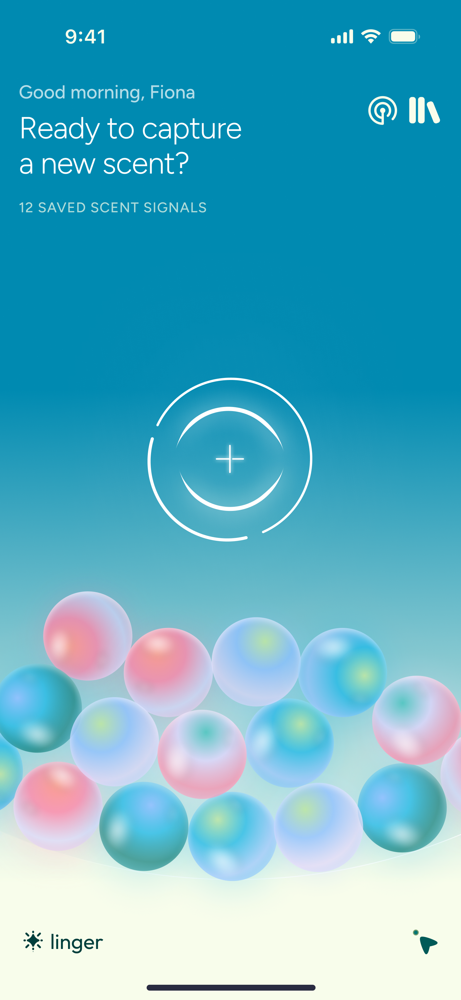
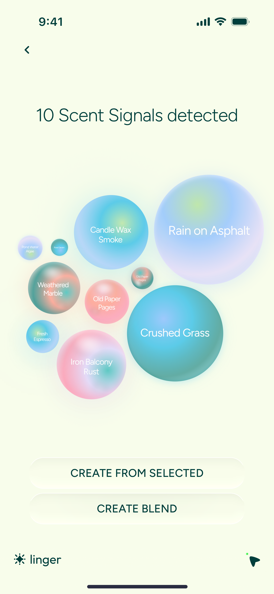
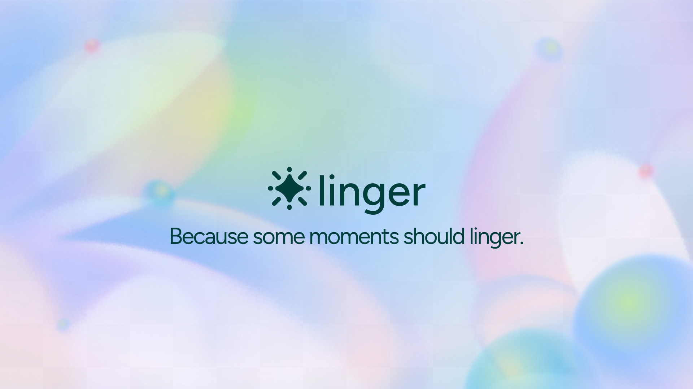
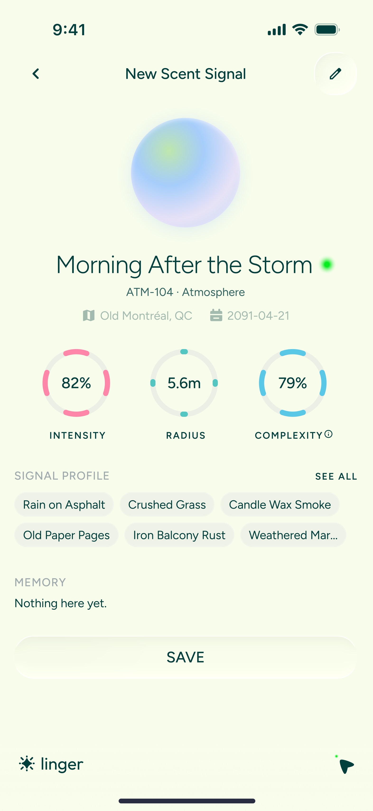
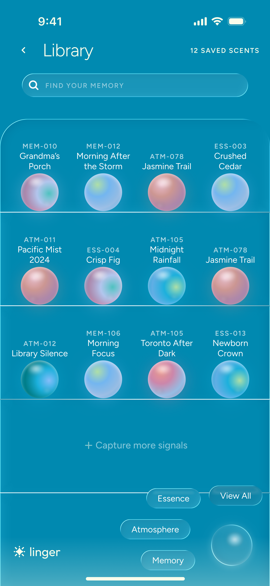
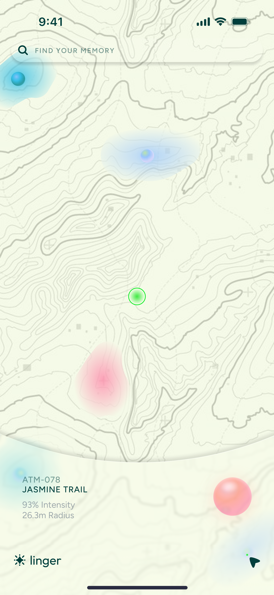

FigBuild 2026 · Designathon
Linger
Because some moments should linger.
A multi-feature mobile app for scent-mapping, with a speculative wearable concept, designed in 83 hours.
View on Devpost


The Challenge
Design a tool that tracks, measures, visualizes, or quantifies an aspect of human sensory experience, while providing the ability to detect, enhance, or manipulate those same sensory inputs.
My Role
- UX Research
- UX/UI Design
- Concept Strategy
- Visual System
- Ideation
- Prototyping
- Design Craft
- Presentation
- Collaboration
- Brainstorming
- Ideation
- Research
- Design
- Design
- Slide Deck
- Video
- Final Touches
- Submission
The Challenge & Sense...
FigBuild 2026 challenged us to design a tool that quantifies human sensory experience. We chose olfaction, the most primal and emotionally-charged sense.
- The Sense: Olfaction: smell and its connection to memory and emotional regulation.
- The Output: A wearable-integrated mobile ecosystem for scent-mapping.
- Tools: Figma, FigJam, Figma Slides, Google Gemini AI.
An Invisible Language...
"Smell is the most overlooked human sense, yet the most powerful link to our subconscious memory."
- The Gap: Society prioritizes visual and auditory data, leaving olfactory experiences unquantified and fleeting.
- The Insight: Users lack a vocabulary for scent. Without a way to "save" a smell, we lose the emotional and environmental context associated with it.
- The Goal: Transform chemical signals into a tangible, digital archive to support emotional grounding and memory retrieval.
Detect. Archive. Map.
Three interconnected layers form the Linger ecosystem, each addressing a distinct phase of the sensory experience.
A. Detect: The Wearable
A speculative wearable that senses ambient chemical compounds in real-time. Users "capture" a scent as a Memory Signal.
- Generative Orbs represent each captured scent.
- Color encodes chemical family (Floral, Earthy, Synthetic).
- Texture and vibrancy reflect emotional state at time of capture.

B. Library: The Sensory Archive
A personal database of olfactory history. Each entry logs Date, Geo-Location, Mood, and Scent Intensity.
- Enables scent-based reflection; revisit moments through a non-linear, sensory lens.
- Surfaces emotional and environmental context that was previously invisible.

C. Map: Olfactory Navigation
A spatial visualization of the user's "Scent-Scape." View saved signals, discover similar scents in the wild, or follow Scent Trails.
- Transforms ordinary environments into interactive, grounding experiences.
- Reduces sensory overstimulation by making the environment navigable.

Visualizing the Invisible...
Digital screens have no symbolic language for smell. We developed a visual system built on chromatic orbs as the core metaphor.
- Vibrancy = Scent Intensity.
- Hue = Chemical Family (Floral, Earthy, Synthetic).
- Diffusion = Scent Longevity & Range.
Demo...
Slide Deck...
Designing with Care...
Olfactory data is deeply personal. We built safeguards into the core of the product.
- Ghost Zones: User-defined areas where scent detection is automatically disabled to protect the privacy of others.
- Relevance-Based Filtering: To prevent "Sensory Fatigue," the app only surfaces signals that align with the user's current wellness goals, keeping information overload in check.
What We Learned & What's Next...
Designing for a "hidden" sense within a 83-hour window pushed us to balance scientific accuracy with emotional resonance in every decision.
Key Lessons...
- Give Users Control of Interpretation
- Designing for hidden senses means providing users with authorship over meaning, not just raw data.
- Speculative Design Needs Grounding
- Every speculative element (the wearable, the orbs, the ghost zones) needed a real human need anchoring it.
- Visual Language is the Product
- When the sense itself can't be displayed, the visual metaphor becomes the entire user experience.
- AI-Assisted Ideation
- Using Google Gemini for brainstorming accelerated workshopping significantly within the 83-hour constraint.
The Sprint...
- Biggest Challenge: Day 1 brainstorming ran well over time. We struggled to decisively land on a concept the whole team wanted to pursue.
- For next time: set a hard time cap for each phase, collect everyone's top ideas up front, and actively call out when the team is drifting past the deadline.
- Balancing scientific accuracy with emotional resonance within an 83-hour window.
- Keeping every speculative design decision grounded in real human emotional needs, not just novelty.
What's Next...
- Multisensory haptic integration for scent playback.
- Social "Scent-Sharing" features for shared memory experiences.
- Long-term studies on Linger's impact on Alzheimer's and memory-related wellness.
Tools Used...
- Figma: UI design, prototyping, and components.
- FigJam: Collaborative ideation and workshopping.
- Figma Slides: Designathon presentation.
- Google Gemini AI: Brainstorming and concept acceleration.